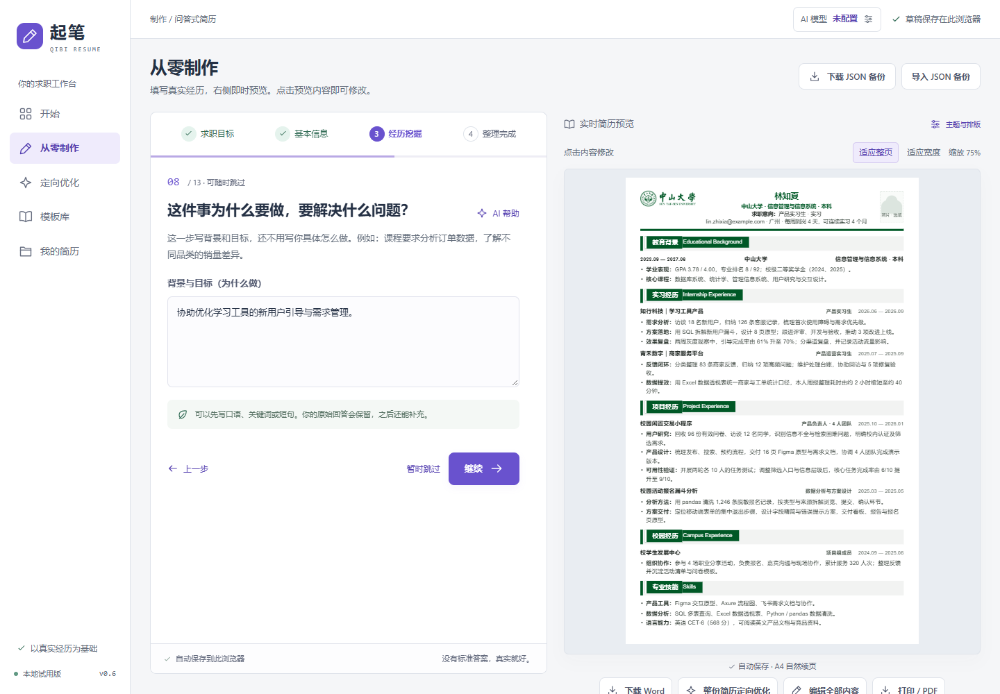

还没写过？从零开始。
学校、课题、项目、校园实践，一步步梳理。左侧回答，右侧成稿。
为第一次实习，也为下一次机会
从一段还没想好怎么写的经历开始。
让 AI 先理解你，再和你一起，把简历写好。
面向中国学生 · 不限专业 · 保留你的表达权
“参与项目，负责数据分析。”
你分析了什么数据？
其中哪一步是你亲自完成的？
学校、课题、项目、校园实践，一步步梳理。左侧回答，右侧成稿。
导入 PDF / Word，带上岗位 JD，从最需要改进的地方开始讨论。
从一句笼统的话，开始一次有用的对话
选择一个虚构案例，看看逐项协作如何发生。
本演示使用预设内容，不调用 AI，也不收集简历。
实际应用会根据用户材料与回答动态提问；这里不提供文件上传、实时改写或下载。
student@example.com · 深圳 / 线上
把选择权留在用户手里
原稿与修改稿对照，点击内容即可编辑。觉得不合适，可以回退，也可以继续讨论。
学校主题、配色、版式与密度分别组合。换一种外观，不改动真实履历。
下载可编辑 Word，打印 PDF，保留多个投递版本，为下一次修改留出余地。
来自实际应用的画面
虚构样例的工作台截图。
页面是产品实录，模型回复可能来自隔离测试。

关于这个项目
起笔是一个持续迭代的本地产品原型。这个公开仓库展示设计思路与交互，核心源码保持私有；真实 AI 服务尚未在此公开开放。
在 GitHub 了解项目 ↗阅读设计说明